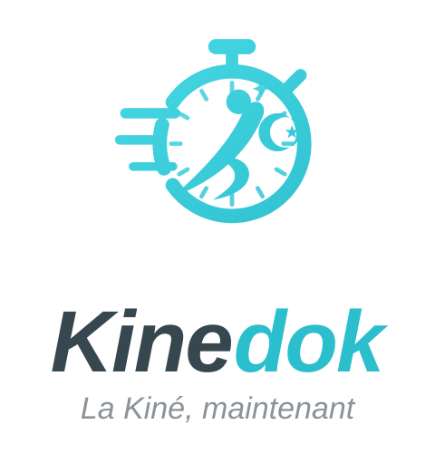

Les quatre variantes du logo, sur les quatre fonds utilisés par l’application.
Variantes compact, mark et horizontal.
Le logo monochrome turquoise ne demande ni pastille blanche ni variante « dark ».
Variante horizontal, baseline incluse, à 52 px de haut.

Variante stacked sur pastille blanche : le panneau est déjà turquoise.